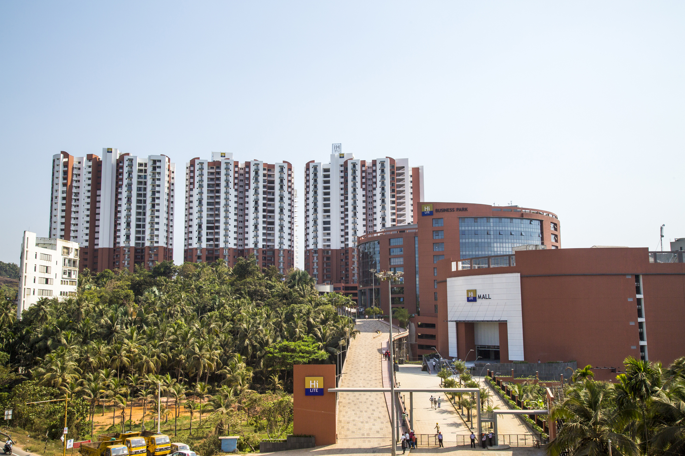
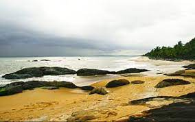
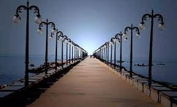

Kozhikode is a coastal city in the south Indian state of Kerala. It was a significant spice trade center and is close to Kappad Beach, where Portuguese explorer Vasco da Gama landed in 1498. The central Kozhikode Beach, overlooked by an old lighthouse, is a popular spot for watching the sunset. Inland, tree-lined Mananchira Square, with its musical fountain, surrounds the massive Mananchira Tank, an artificial pond.
Kappad, or Kappakadavu locally, is a beach near Koyilandy, in the district Kozhikode, Kerala, India. A stone monument installed by government commemorates the "landing" by Vasco da Gama with the inscription, 'Vasco da Gama landed here, Kappakadavu, in the year 1498'.
Beypore or Beypur is an ancient port town and a locality town in Kozhikode district in the state of Kerala, India. It is located opposite to Chaliyam, the estuary where the river Chaliyar empties into Arabian Sea. Beypore is part of Kozhikode Municipal Corporation.
Kakkayam is a dam site located at Koorachundu in Kozhikode, Kerala. Kakkayam is on the outskirts of the Western Ghats, a UNESCO world heritage site, and Malabar Wildlife Sanctuary, a 7,421-hectare abode of wild animals including elephants and bisons.